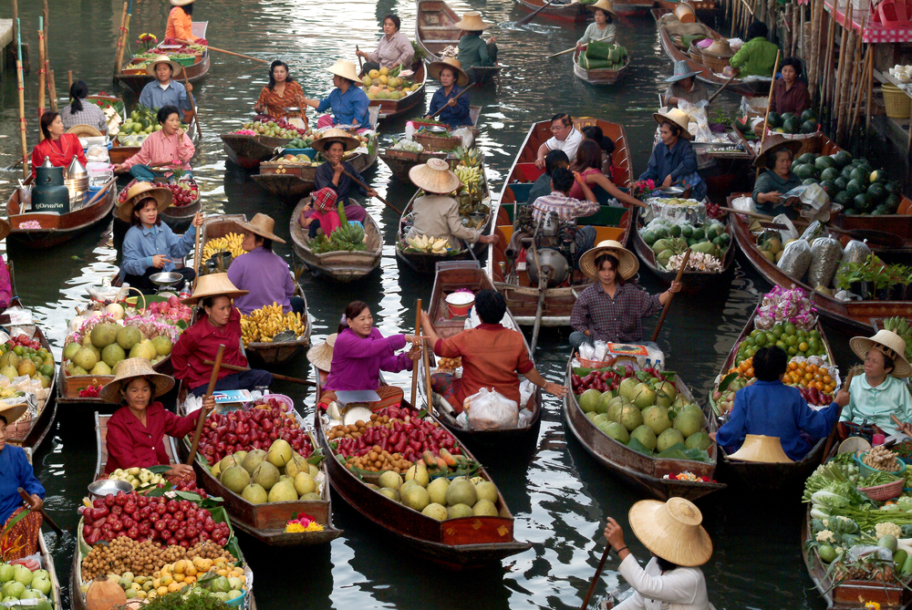
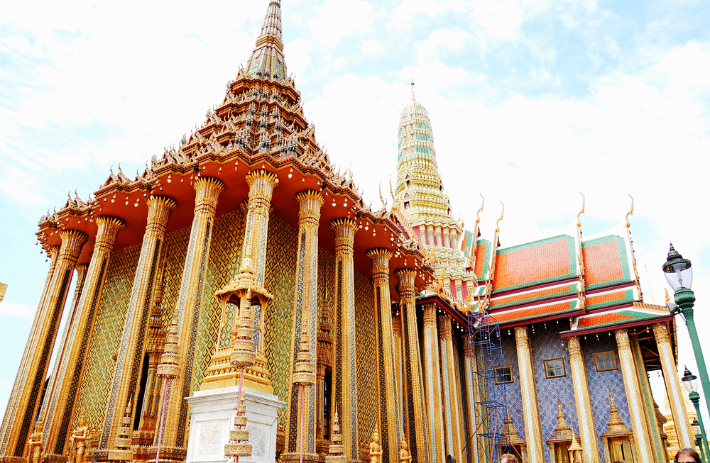
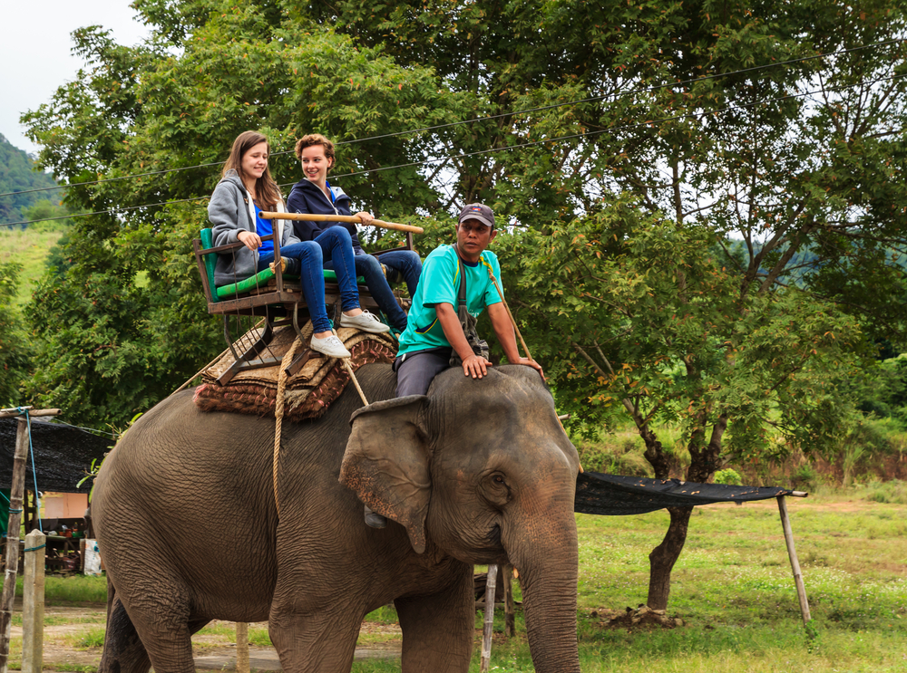
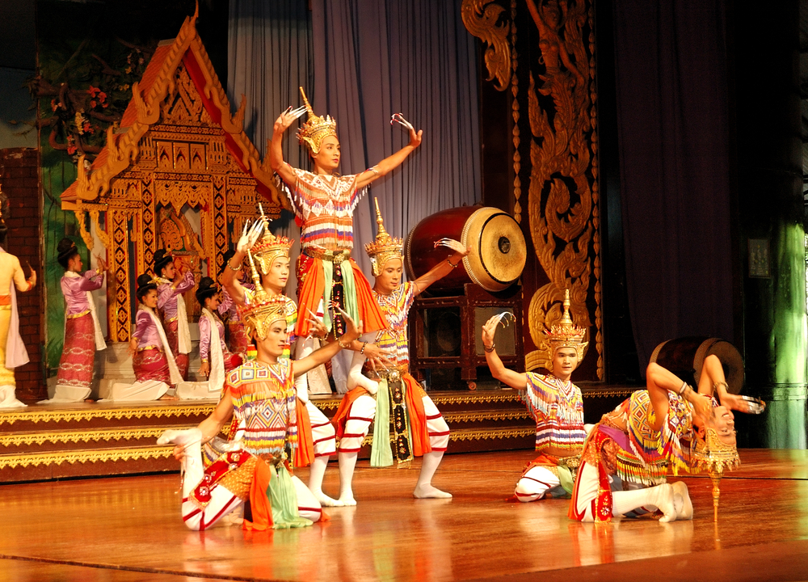
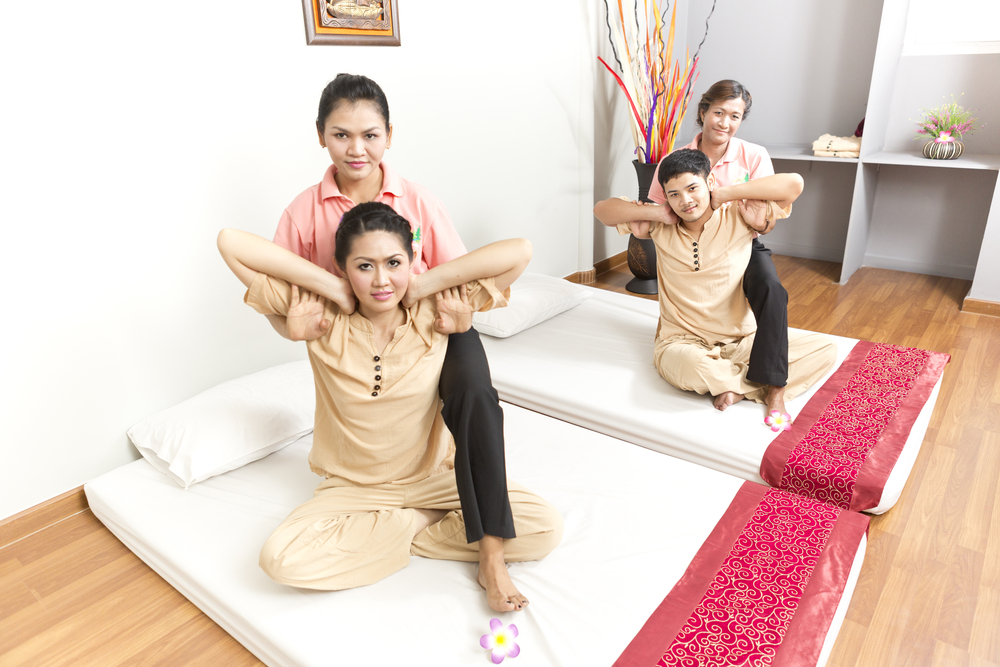
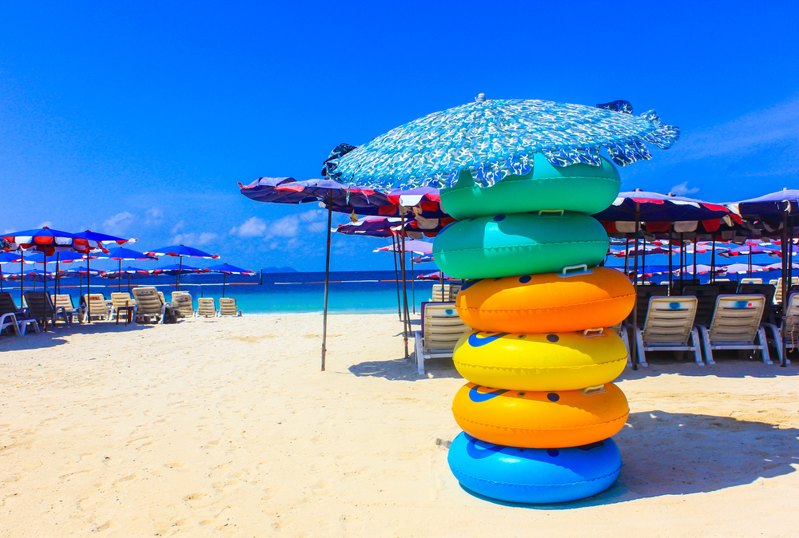
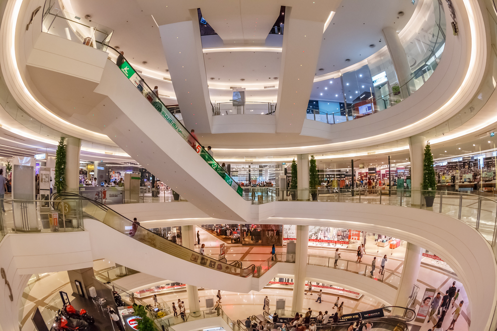
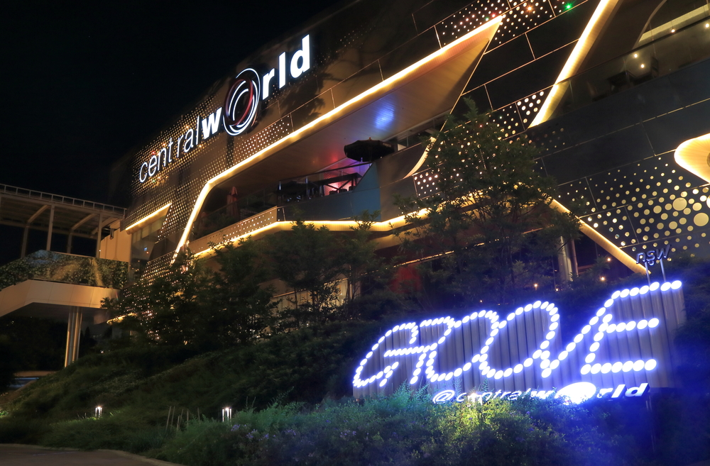

第1天深圳-曼谷
- 参考航班：TG607 2045/2225
- 各位贵宾于指定时间在皇岗口岸集合，由领队带领办理相关出国手续。接受泰国黄金机场美女献花仪式，欢迎大家来到泰国旅游观光，而后有泰国专业华语导游带贵宾们上车住宿曼谷酒店，路途中经验丰富的导游会给大家介绍泰国的风土人情及泰国的注意事项。
第2天曼谷-
- 早餐后，前往建于十八世纪末期金碧辉煌的泰国旅游代表作-【大皇宫】，以及泰国第一国宝【玉佛寺】(约60分钟)，壮丽美观的宫殿和雄伟万千的佛寺建筑，充分体现出佛教精髓已深植于泰国文化中。
- 午餐后前往：【阿兰达皇家博物馆】（约60分钟） 2006年九世泰王在此宴请全世界各国贵宾后，才对外开放的皇家博物馆。国王专门聘请意大利著名工匠建造，具有浓浓的欧式风情。它不仅外观气势恢宏，内饰细节精美绝伦。博物馆内遍布奇珍异宝，各式精贵的皇家珍品琳琅满目，价值连城，让人叹为观止。途径皇家田，前往码【游艇游览湄南河】有"东方威尼斯"之称的【水上市场】，并可观看到建在河上密密麻麻的泰式高脚屋，了解当地水上人家的真实生活。
- 驱车到曼谷市郊参观【北揽鳄鱼湖】等待我们的是成千上万大大小小的鳄鱼和闻名于世的人斗鳄鱼表演。然后观看享誉全球的【人妖歌舞表演】『60m』。


第3天曼谷-芭提雅
- 酒店用早餐，后乘车前往泰国享誉最著名的海滨渡假区—芭堤雅，前往东芭乐园】游览泰国最大的主题乐园【东芭民俗文化村】『120m』，有精心栽培的蘭花園、仙人掌園區可供旅客觀賞；還有【民俗表演】让您领略泰国本土风情。，此外最博得觀眾青睞的，就屬【大象表演】 踢足球、跳舞、拔河，能让您开怀大笑、乐得满地找牙。
- 到达后参加【骑大象+坐马车+探险船大战鳄鱼湖】（约40分）：先【骑大象】代步,森林田野象步悠悠享受泰国独特情调。之后将乘探险船直闯龙潭,团友们被大大小小的鳄鱼包围。【坐泰式风味马车】离开令人印象深刻的泰国鳄鱼湖。参观游览【热带水果园】，这里依托1,700多亩良田种植了数十种热带水果，团友缓缓穿行于郁郁葱葱、枝叶繁茂的园林中，空气中弥漫着水果飘香的芬芳，途中休息站您还可畅食不同种类的时令新鲜水果（水果品种以当时赠送为准）。 晚上前往【泰国公主号游船（东方公主或暹罗公主）】欣赏东方夏威夷芭堤雅的暹逻湾夜景，船上并有东方公主们的歌舞秀表演和美味可口的精致晚餐及酒水无限量招待，是外国游客必去场所。泰国人妖的精彩歌舞表演令很多人对台上的丽人们雌雄难辨，在船上我们将与她们近距离接触。在此提醒大家，若被人妖“骚扰”，最好定气凝神、泰然处之，但请不要向旅行社投诉！（船上逗留约60分钟左右）后到芭提雅的最高点【太平洋观景台】观看芭提雅的夜景。
- 驱车到曼谷市郊参观【北揽鳄鱼湖】等待我们的是成千上万大大小小的鳄鱼和闻名于世的人斗鳄鱼表演。然后观看享誉全球的【人妖歌舞表演】『60m』。


第4天芭提雅-
- 早餐后前往【珊瑚岛】（约40分钟），这个美丽的珊瑚岛，拥有着蔚蓝透彻的海水，海水被月牙儿般的沙滩环抱着，沙滩上的沙粒儿洁白而松软，非常的干净和美丽，海域的水质清透，深达数米下的海底世界都可以被透视。距离珊瑚岛西岸的海底，可以观看到大片美丽而色彩斑斓的珊瑚，游客们可以自费潜水入海近距离的观赏海底珊瑚。在沙滩上摆满了各种沙滩椅和色彩明艳的太阳伞，让游客能有一种舒适安逸的享受。
- 后赴【金沙岛】～是暹罗湾中宁静无污染的天然岛屿，湛监的海水、白云般的细沙，素有“东方小马尔代夫”之称。尽情欣赏海岛风光，感受阳光沙滩，享受一个悠闲自在的假期。
- 后乘船返回芭提雅，继而前往【七珍佛山】（参观时间约30分钟）仿佛一斧劈开半山、镶上金粉金箔的大壁佛，也是当地人士公认风水区最好的地方，之后安排独特正宗的【泰式古法按摩】，消除全身疲劳、疏通筋骨，舒畅万分（约1个钟）。


第5天芭提雅-曼谷
- 酒店用早餐后前往【神殿寺】（参观时间约60分钟），参拜“四面佛” 四面佛在泰国被称为有求必应佛,是泰国香火最旺的佛像之一,每天从世界各地前来的朝拜许愿者成群结队,络绎不绝，在义工的引领之下到达佛堂膜拜释迦牟尼佛和给佛祖贴金。然后来到【原石博物馆】参观（约30分钟）；后前往曼谷的免税店【kingpower】，大家可以在KINGPOWER国际免税店自由活动，自由选购适合自己的各式免税品！


第6天曼谷-香港/深圳
- 参考航班：TG600 0800/1145
- 酒店用过早餐后前往国际机场乘机返回香港机场后散团，结束愉快旅程。